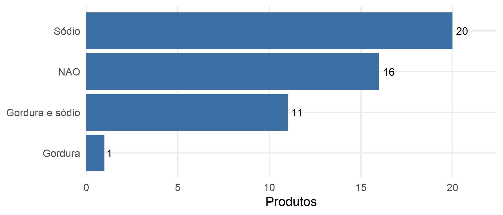
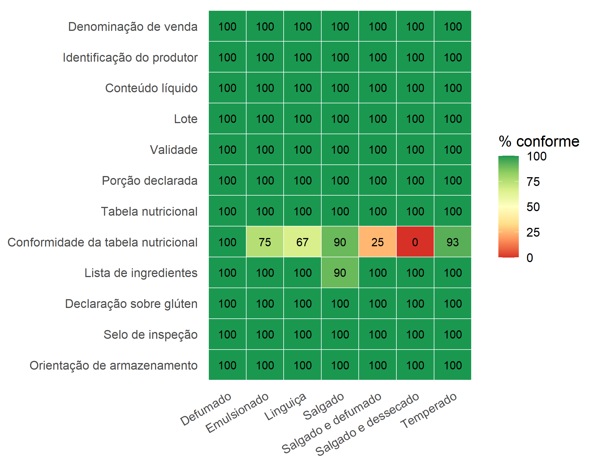

2 · Conformidade da rotulagem
Itens obrigatórios de rotulagem
Percentual de produtos que apresentam / estão em conformidade com cada item (1 = sim/conforme). Células em branco ficam fora do denominador.
| Item | Conformes (n) | Válidos (N) | % |
|---|---|---|---|
| Conteúdo líquido | 48 | 48 | 100,0 |
| Declaração sobre glúten | 48 | 48 | 100,0 |
| Denominação de venda | 48 | 48 | 100,0 |
| Identificação do produtor | 48 | 48 | 100,0 |
| Lote | 48 | 48 | 100,0 |
| Orientação de armazenamento | 48 | 48 | 100,0 |
| Porção declarada | 48 | 48 | 100,0 |
| Selo de inspeção | 48 | 48 | 100,0 |
| Tabela nutricional | 48 | 48 | 100,0 |
| Validade | 48 | 48 | 100,0 |
| Lista de ingredientes | 47 | 48 | 97,9 |
| Conformidade da tabela nutricional | 39 | 48 | 81,3 |
| Nota. Percentual calculado sobre os produtos com informação (células em branco excluídas). | |||
NotaInterpretação
10 dos 12 itens estão presentes/conformes em 100% dos produtos da amostra. Os itens que falham são: Conformidade da tabela nutricional (81,3% (IC 95%: 67,4–91,1)) e Lista de ingredientes (97,9% (IC 95%: 88,9–99,9)). O intervalo de confiança (IC) de 95% mostra a incerteza de estimar a proporção a partir de uma amostra pequena: mesmo um item cumprido por todos os 48 produtos (100%) é compatível com uma proporção real de pelo menos 92,6% na população de produtos semelhantes. Esta seção não compara grupos e, por isso, não traz valor de p.
Rotulagem nutricional frontal (RNF)
Média de alertas na RNF: 0,90.
| Indicador | n | Válidos (N) | % |
|---|---|---|---|
| RNF exigida | 36 | 48 | 75,0 |
| RNF presente (entre as exigidas) | 32 | 36 | 88,9 |
| RNF conforme (entre as presentes) | 27 | 32 | 84,4 |
| Nota. RNF = rotulagem nutricional frontal. A base (N) de cada linha é o grupo indicado no rótulo da linha. | |||
NotaInterpretação
A RNF era exigida em 75,0% (IC 95%: 60,4–86,4) dos produtos. Entre os que a exigem, 88,9% (IC 95%: 73,9–96,9) a apresentam, o que deixa 4 produtos obrigados sem RNF. Entre os que a apresentam, 84,4% (IC 95%: 67,2–94,7) estão conformes, isto é, 5 produtos têm RNF mas fora do padrão. Cada percentual vem com IC 95% exato, que é largo porque a base é pequena (36 e 32 produtos): a estimativa pontual deve ser lida junto do intervalo. Os percentuais são encadeados (cada um usa como base o grupo da linha anterior), por isso não somam. Não há comparação entre grupos aqui, então não há valor de p.
Número de alertas

| Nº de alertas | n | % |
|---|---|---|
| 0 | 16 | 33,3 |
| 1 | 21 | 43,8 |
| 2 | 11 | 22,9 |
| Total | 48 | 100,0 |
| Nota. n = número de produtos; % = percentual sobre o total de produtos da linha Total. | ||
NotaInterpretação
A distribuição é de 16 produtos sem alerta, 21 com 1 alerta e 11 com 2 alertas (média de 0,90 alertas por produto). O grupo sem alerta mistura duas situações: 12 produtos em que a RNF nem é exigida e 4 em que ela é exigida e nenhum nutriente passou do limite. Por isso, ao relacionar alertas com outras variáveis (ver Relações), a análise principal usa só os produtos com RNF exigida.
Nutriente(s) indicado(s)

| Nutriente(s) indicado(s) | n | % |
|---|---|---|
| Sódio | 20 | 41,7 |
| NAO | 16 | 33,3 |
| Gordura e sódio | 11 | 22,9 |
| Gordura | 1 | 2,1 |
| Total | 48 | 100,0 |
| Nota. n = número de produtos; % = percentual sobre o total de produtos da linha Total. | ||
NotaInterpretação
Entre os 32 produtos com algum alerta, o sódio é indicado em 31 (96,9%) e a gordura em 12 (37,5%). Ou seja, o sódio é o nutriente que mais motiva o alerta, e quando há dois alertas eles são de gordura e sódio. O valor reflete o perfil de produtos curados e salgados da amostra; é descrição, sem teste de hipótese.
Conformidade por subgrupo

| Item | Defumado | Emulsionado | Linguiça | Salgado | Salgado e defumado | Salgado e dessecado | Temperado |
|---|---|---|---|---|---|---|---|
| Denominação de venda | 100,0 | 100,0 | 100,0 | 100,0 | 100,0 | 100,0 | 100,0 |
| Identificação do produtor | 100,0 | 100,0 | 100,0 | 100,0 | 100,0 | 100,0 | 100,0 |
| Conteúdo líquido | 100,0 | 100,0 | 100,0 | 100,0 | 100,0 | 100,0 | 100,0 |
| Lote | 100,0 | 100,0 | 100,0 | 100,0 | 100,0 | 100,0 | 100,0 |
| Validade | 100,0 | 100,0 | 100,0 | 100,0 | 100,0 | 100,0 | 100,0 |
| Porção declarada | 100,0 | 100,0 | 100,0 | 100,0 | 100,0 | 100,0 | 100,0 |
| Tabela nutricional | 100,0 | 100,0 | 100,0 | 100,0 | 100,0 | 100,0 | 100,0 |
| Conformidade da tabela nutricional | 100,0 | 75,0 | 66,7 | 90,0 | 25,0 | 0,0 | 92,9 |
| Lista de ingredientes | 100,0 | 100,0 | 100,0 | 90,0 | 100,0 | 100,0 | 100,0 |
| Declaração sobre glúten | 100,0 | 100,0 | 100,0 | 100,0 | 100,0 | 100,0 | 100,0 |
| Selo de inspeção | 100,0 | 100,0 | 100,0 | 100,0 | 100,0 | 100,0 | 100,0 |
| Orientação de armazenamento | 100,0 | 100,0 | 100,0 | 100,0 | 100,0 | 100,0 | 100,0 |
| Nota. Valores em % de produtos conformes dentro de cada subgrupo (células em branco excluídas). | |||||||
NotaInterpretação
A não conformidade se concentra em um item, a conformidade da tabela nutricional: subgrupos abaixo de 100% são Salgado e dessecado (0,0%; 0/1), Salgado e defumado (25,0%; 1/4), Linguiça (66,7%; 2/3), Emulsionado (75,0%; 6/8), Salgado (90,0%; 9/10) e Temperado (92,9%; 13/14). Para testar se a conformidade da tabela nutricional difere entre subgrupos usou-se o teste exato de Fisher (Freeman-Halton, p por simulação): p = 0,009. Como p < 0,05, há evidência de que a conformidade difere entre os subgrupos. Vários subgrupos têm 1 a 4 produtos, então o teste tem pouco poder para detectar diferenças reais; um valor de p alto aqui não prova que os subgrupos são iguais.
Mapa produto × item

Produtos com algum item não conforme
| ID | Marca/empresa | Produto | Subgrupo | Itens não conformes | Nº |
|---|---|---|---|---|---|
| P033 | M11 | Carne do sol | Salgado | Conformidade da tabela nutricional, Lista de ingredientes | 2 |
| P013 | M04 | Salsicha Polonia | Emulsionado | Conformidade da tabela nutricional | 1 |
| P014 | M04 | Salsicha Pernil | Emulsionado | Conformidade da tabela nutricional | 1 |
| P029 | M08 | Charque | Salgado e dessecado | Conformidade da tabela nutricional | 1 |
| P030 | M09 | Costela suina salgada e defumada | Salgado e defumado | Conformidade da tabela nutricional | 1 |
| P031 | M09 | Linguiça suína apimentada | Linguiça | Conformidade da tabela nutricional | 1 |
| P039 | M13 | Cordeiro temperado | Temperado | Conformidade da tabela nutricional | 1 |
| P047 | M09 | Pernil suino salgado e defumado | Salgado e defumado | Conformidade da tabela nutricional | 1 |
| P048 | M09 | Pe suino salgado e defumado | Salgado e defumado | Conformidade da tabela nutricional | 1 |
| Nota. 9 de 48 produtos. | |||||
NotaInterpretação
9 produtos (18,8%) têm pelo menos um item não conforme e 1 têm mais de um. A marca com mais produtos nessa lista é M09 (4 produtos). A tabela serve para localizar quais produtos precisam de revisão do rótulo; como a conformidade é avaliada produto a produto, não há teste estatístico nem valor de p nesta seção.